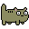

You inspect further...
Following the source of the noise, you soon find a tiny comfy warm digital hole. Something seems to be moving inside...
Yes... There's definitely something here...
You lean in and notice that a stray cat has made this space its home. It was probably left behind by the former inhabitants of the Neighborhood. Poor thing...
The stray cat looks at you with a dead eyed stare.  Before you can lean in to maybe pet it, it runs away.
Maybe you should follow it! It's not nice to leave cats without a home, and this one looks like it could use one.
Follow the cat!
🏚🕳🏚
Artichoke/2.4.39 Server at tetrageddon.com Port 80